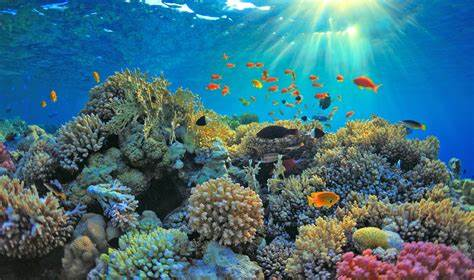
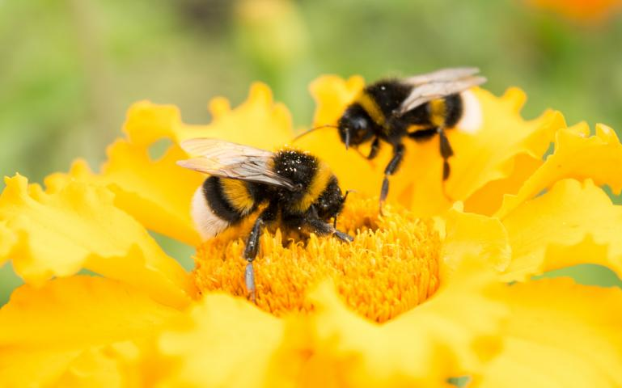
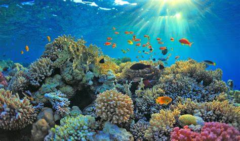
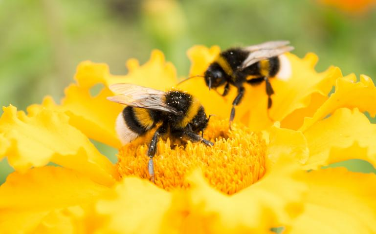

Global climate change has already had observable effects on the environment. Glaciers have shrunk, ice on rivers and lakes is breaking up earlier, plant and animal ranges have shifted and trees are flowering sooner.
Effects that scientists had predicted in the past would result from global climate change are now occuring: loss of sea ice, accelerated sea level rise and longer more intense heat waves. Scientists have high cinfidence that global temperatures will continue to rise for decades to come, largely due to greenhouse gasses produced by human activities. The Intergovernmental Panel on Climate Change(IPCC), which includes more than 1300 scientists from all over the world forecasts a temperature rise of 2.5 to 10°F in the next century. The IPCC predicts that increases in in global mean temperature of less than 1.8 to 5.4°F (1 to 3°C) above 1990 levels will produce beneficial impacts in some regions and harmful ones in others. net annual costs will increase over time as global temperatures increase.
"Taken as a whole" the IPCC states, "The range of published evidence indicates that the net damage costs of climate change are likely to be significant and increase over time."
Global warming is likely to be the greatest cause of species extinctions this century. The IPCC says a 1.5°C average rise may put 20-30% of species at risk of extinction. If the planet warms by more than 2°C, most ecosystems will struggle. Many of the world's threatend species live in areas that will be severly affected by climate change. And Climate change is happening too quickly for many species to adapt.
 

Melting Arctic ice removes hunting ground from polar bears. Warmer water temperatures will cause population declines for trout, salmon, and many other species that require cold water to survive. Rising ocean temperatures have already caused massive coral bleaching, leading to the collapse of these ecosystems, which sustain huge numbers of fish. Many species take their cues about when to migrate, flower, nest, or mate from seasonal changes in temperature, precipitation, and daylight. Climate change is confusing those signals and forcing wildlife to alter their life cycle and seasonal events. In the western United States, warming and drought stress are causing trees to die and making them more vulnerable to pine beetle and other insect infestations. Higher temperatures and increased fuel from dead trees have led to more wildfires.
Climate change also affects animals and plants as the world experiences further changes in rainfall and temperature.Forecasts show that 30 per cent of land-based bird species could become extinct if temperatures continue to rise. Climate change will also have a negative impact on plants, insect species and on parts of the world's rainforests.Some butterflies, foxes, and alpine plants have migrated to colder climates or to higher, cooler areas. Spruce bark beetles have boomed in Alaska thanks to 20 years of warm summers. The insects have chewed up 4 million acres of spruce trees.
Ecosystems will change, for example some species will move farther north or become more successful; others won’t be able to move and could become extinct.Wildlife researchers have found that since the mid-1980s, with less ice on which to live and less fish for food,polar bears have become considerably skinnier. They fear that if sea ice disappears, polar bears could become extinct in the wild.
Researchers have tracked the decline of the Adélie penguins in Antarctica, where their numbers have fallen from 32,000 breeding pairs to 11,000 in 30 years.Species that depend on one another may become out of sync. For example, plants could bloom earlier than their pollinating insects become active.